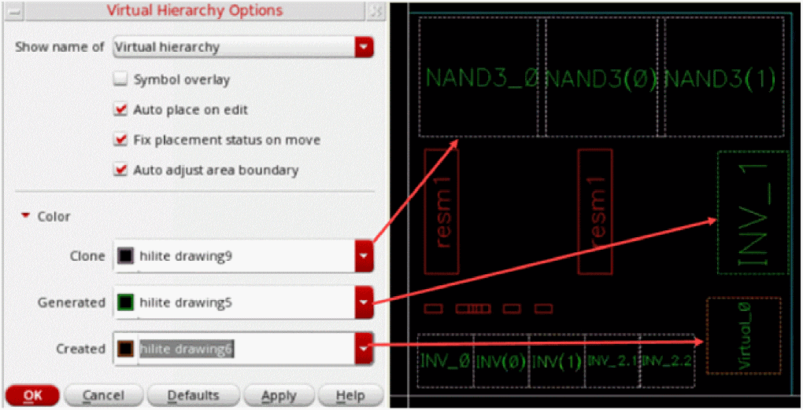

Types of Virtual Hierarchies
Virtual hierarchies can be created, cloned, or generated. This means a layout in Virtuoso Layout Suite EXL can have three different types of virtual hierarchies—depending on how the virtual hierarchies were formed.
To support ease of identification, the bounding box of the virtual hierarchies in the layout can be color-coded differently using the Color options on the Design Planning and Analysis Options form. You can display the virtual hierarchy bounding box using the default color for each type or select a color of your choice. The text labels on each virtual hierarchy use the same color, irrespective of the virtual hierarchy type they belong to.

Related Topics
Return to top